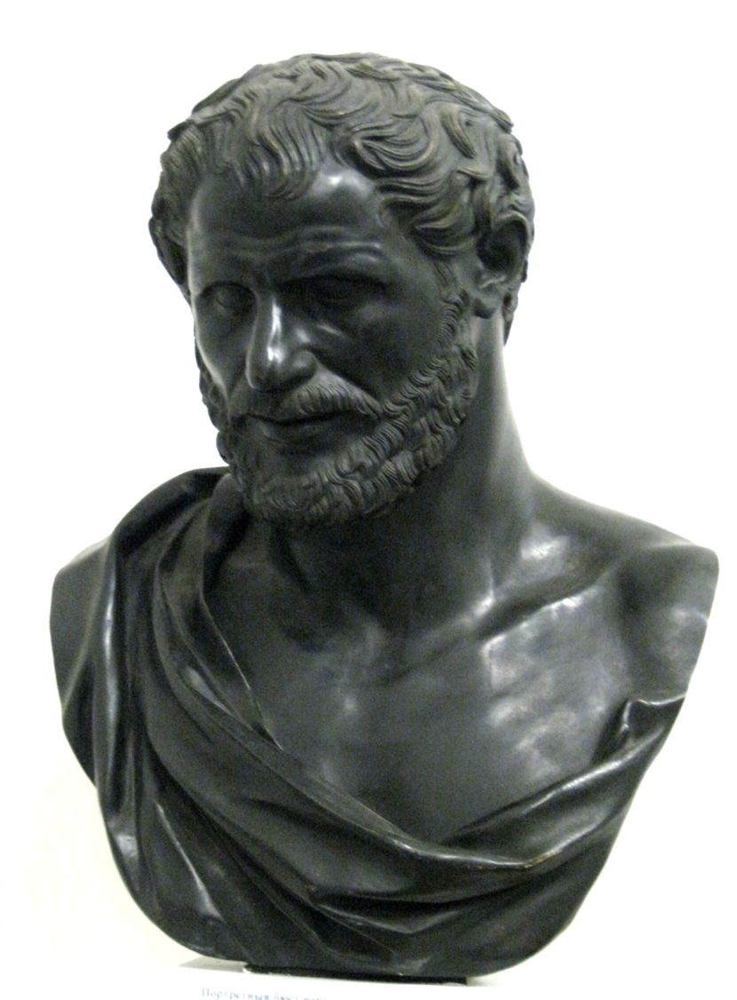

Democritus (c. 460-370 BC)

Democritus (c. 460 - 370 BCE) was an ancient Greek philosopher born in Abdera, a city in northern Greece. He was one of the Pre-Socratic philosophers and is best known for developing an early theory of atoms. He believed that everything in the universe was made up of tiny, indivisible particles called atoms, which moved through empty space. According to his theory, different objects and substances existed because their atoms differed in shape, size, and arrangement.
Democritus believed that changes in the world occurred when atoms moved, combined, or separated. Rather than explaining nature through the actions of gods or supernatural forces, he tried to understand the universe through physical processes. Although ancient Greek atomism was not based on modern scientific experiments, it was an important early attempt to explain the structure of matter using reason and observation.
His interests extended far beyond the study of atoms. Democritus wrote about many subjects, including nature, knowledge, ethics, and human life. Unfortunately, none of his original writings has survived in complete form. Much of what is known about his ideas comes from references made by later thinkers, particularly Aristotle, who considered Democritus an important figure in the study of nature.
Democritus was also known in ancient times as the “Laughing Philosopher.” This nickname was connected to his reputation for valuing cheerfulness and looking at human behaviour with humour. He believed that a balanced and peaceful life was more valuable than constantly seeking wealth or fame.
Democritus' ideas about atoms became an important part of the history of philosophy and influenced later discussions about the nature of matter. Although his theory was very different from modern atomic science, his attempt to explain the universe through tiny particles helped introduce ideas that would continue to be explored for centuries.